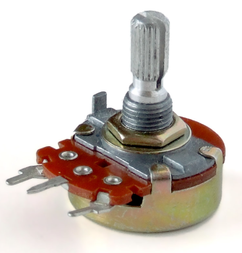

Součásti, které tvoří naši chytrou lednici.
Roh krabice (8×)

Roh krabice – jiné úhly
Roh krabice – jiné úhly

Krabice – vnější

Krabice – vnitřní

Rohové díly byly navrženy v Blenderu a slouží k pevné konstrukci vnitřní i vnější krabice.
Reguluje teplotu uvnitř zařízení.

Zajišťuje odsun teplého vzduchu.

Řídicí jednotka projektu (240 MHz, WiFi, Bluetooth).

Řízení výkonu Peltierova článku.

Detekce otevření dveří.

Měření teploty.

Hlavní chladicí prvek.

Zobrazení teploty.

Regulace teploty (nastavitelný odpor / dělič napětí).

Součást měření teploty.

Izolace vnitřního prostoru.

Konstrukční základ.

Napájení celého systému.